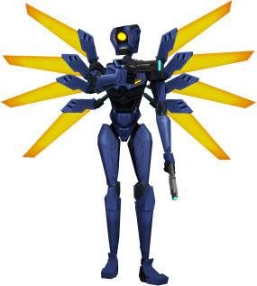

O JOGO ULTRAKILL

V1
ULTRAKILL é um jogo de tiro em primeira pessoa (First-Person Shooter, ou FPS) extremamente rápido, desenvolvido pelo finlandês Arsi "Hakita" Patala e publicado pela New Blood Interactive. Lançado em acesso antecipado na Steam em 3 de setembro de 2020, o jogo continua recebendo atualizações com novos conteúdos, armas, inimigos e fases.
O jogador controla V1, uma máquina de combate que desce ao Inferno em busca de sangue, sua principal fonte de combustível e energia. Após a extinção da humanidade, as máquinas ficaram sem sua fonte de energia e passaram a procurar sangue para sobreviver, encontrando no Inferno uma quantidade abundante de criaturas.
O jogo é dividido em diferentes camadas, inspiradas nos círculos do Inferno descritos em A Divina Comédia, de Dante Alighieri. Cada uma apresenta ambientes, inimigos, desafios e chefes próprios, relacionados aos pecados e conceitos que representam sua respectiva região.
Seu principal destaque é o combate rápido e dinâmico, que recompensa não apenas a precisão, mas também a criatividade e a variedade de ações. O jogador recebe classificações de estilo ao combinar armas, realizar movimentos especiais e executar eliminações elaboradas. Além disso, o sangue dos inimigos recupera a vida de V1, incentivando o combate agressivo e a aproximação constante dos adversários.
FICHA TÉCNICA
| Item | Informação |
|---|---|
| Criador | Arsi "Hakita" Patala |
| Publicadora | New Blood Interactive |
| Lançamento | 3 de setembro de 2020 (acesso antecipado) |
| Plataforma | PC (Steam) |
| Gênero | FPS de ação rápida |
| Dificuldades | Harmless, Lenient, Standard, Violent e Brutal |
MEDIDOR DE ESTILO
Durante o combate, o jogo mostra uma patente de estilo que sobe conforme você varia as armas e os ataques. Da menor para a maior: Destructive (D), Chaotic (C), Brutal (B), Anarchic (A), Supreme (S), SSadistic (SS), SSShitstorm (SSS) e ULTRAKILL.